Major Characters
Protagonists
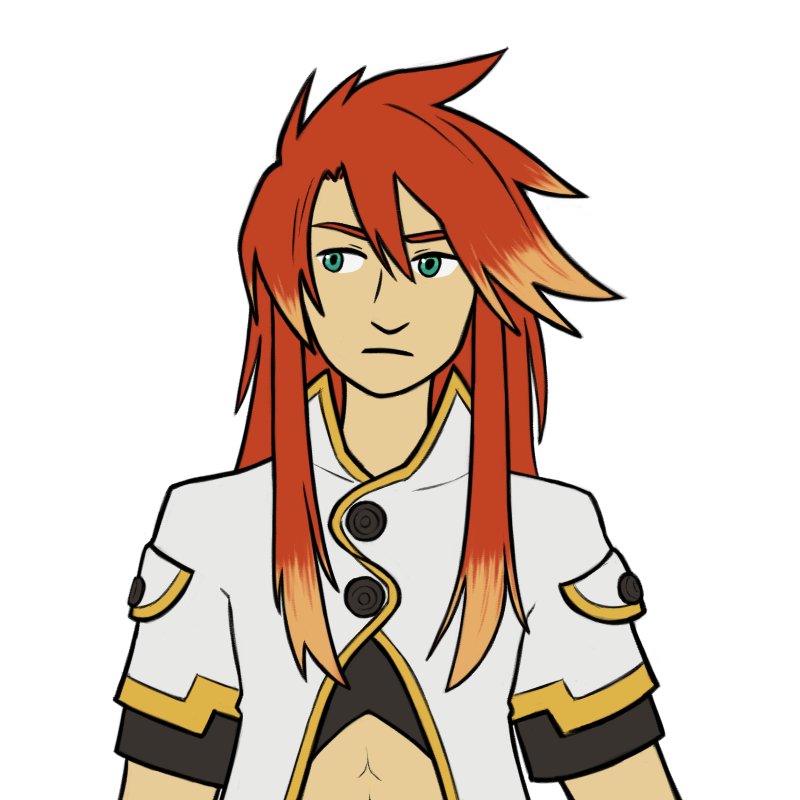
Luke fon Fabre
| Age | 17 |
| Class | Melee |
| Weapon | Sword |
Son and heir of a Duke, and nephew to the King of Kimlasca-Lanvaldear. He spent most of his life under house arrest after a childhood kidnapping that left him with amnesia, and as a result is spoiled, bored out of his mind, and largely unaware of how the world works outside of his family's mansion. A brat, but with a good heart. He eventually gets a better haircut.
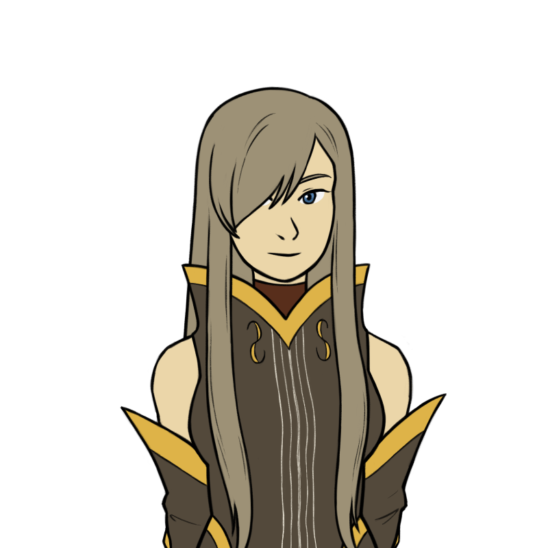
Tear Grants
| Age | 16 |
| Class | Healer |
| Weapon | Staff |
A mysterious woman who accidentally kick-started the plot with a botched assassination attempt in the Fabre manor. Serious and strict, she's frequently frustrated by Luke's lack of knowledge and his spoiled, impulsive behaviour, but at the same time she's determined to make up for her mistake by getting him safely home. She has a secret love for cute things.
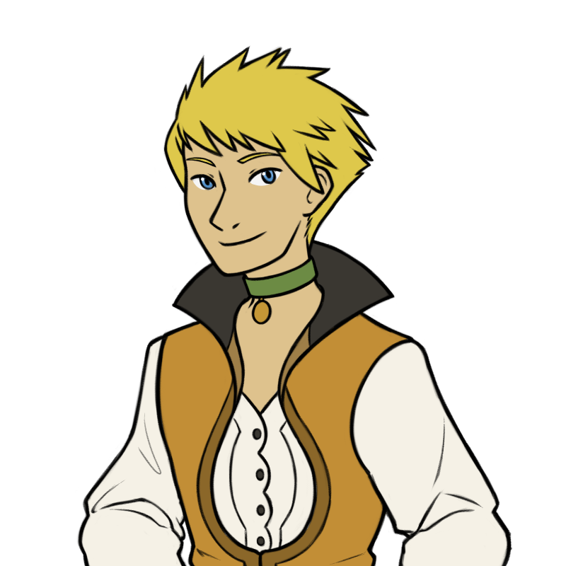
Guy Cecil
| Age | 21 |
| Class | Melee |
| Weapon | Sword |
Luke's best (and only) friend, and a servant working in his family's house. Fascinated with fon machine technology, and deathly afraid of women. He's a genuinely kind and loyal person, though he has hidden depths. Being a servant, he often gets saddled with menial tasks and exposition duty, either out of habit (Luke, Natalia) or to annoy him (Jade).
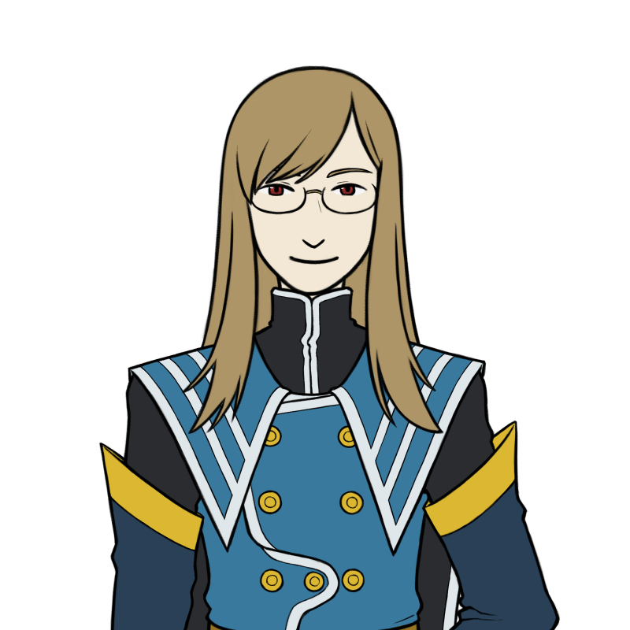
Jade Curtiss
| Age | 35 |
| Class | Mage |
| Weapon | Spear |
Colonel Jade Curtiss, also known as Jade the Necromancer. He's an influential figure in Malkuth, and widely recognized as a genius. He definitely knows more than you, and uses that knowledge to be annoying on purpose. A self-declared old man who uses this fact to get out of menial labour and exposition duty (he's 35).
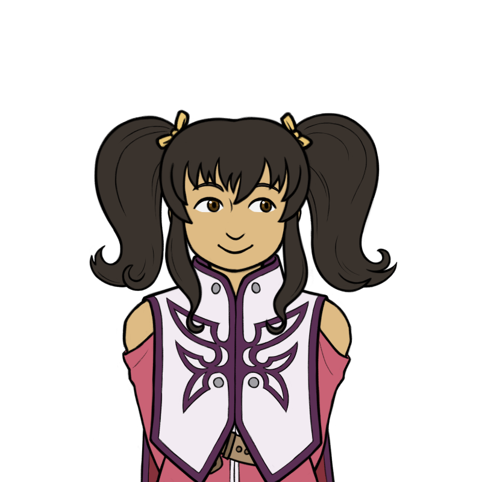
Anise Tatlin
| Age | 13 |
| Class | Mage |
| Weapon | Staff |
A Fon Master Guard, one of Ion's bodyguards. She wants everyone to think she's cute and charming and to give her lots and lots of money. In truth, she's actually pretty devious. She has a heartwarming (?) friendship with Jade based largely on their mutual love of trolling everyone else. She has a doll named Tokunaga that's capable of changing size, and which she uses as a steed in battle.
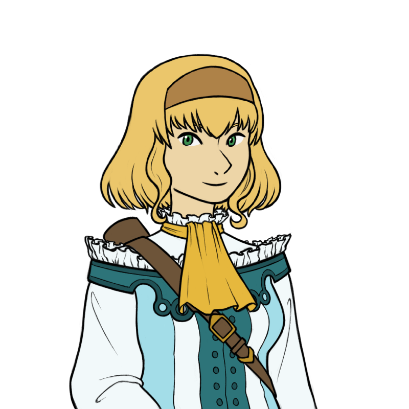
Natalia Luzu Kimlasca-Lanvaldear
| Age | 18 |
| Class | Healer |
| Weapon | Bow |
The crown princess of Kimlasca-Lanvaldear, she's also Luke's cousin, and his fiancée since childhood. She has high expectations of him, and they frequently fight over his failure to live up to them. Her intentions are good, but her standards are high, and she's somewhat naive about the world outside of the high-society circles she was raised in.
Major Non-Playable Characters
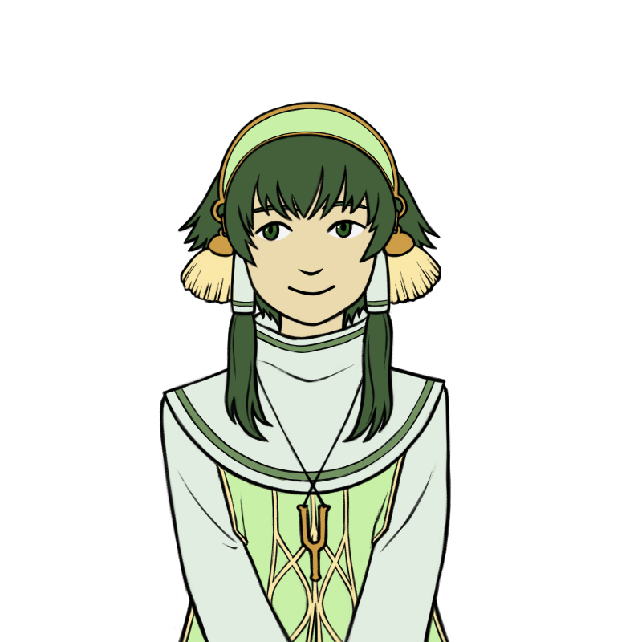
Ion
| Class | Fon Master |
The Fon Master, the spiritual leader of the Church of Lorelei. He's a kind and considerate youth, though physically weak and somewhat frail. He's attempting to use his considerable political influence to prevent a war from breaking out, though he's working against rival factions within the Church that have their own agendas. He travels with the party, but doesn't join them in battle.
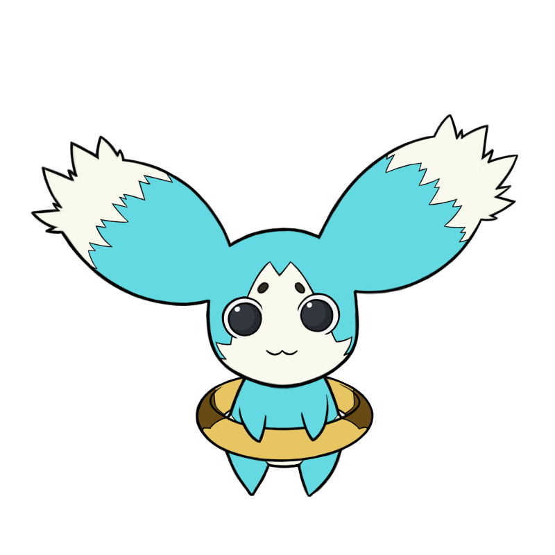
Mieu
| Age | Child |
| Class | Mascot |
A young cheagle, and the party's unofficial mascot. Mieu was exiled from his clan for a year after an accident that caused a forest fire, and joins Luke and the party in the meantime. The Sorcerer's Ring he holds lets him speak human language, breathe fire, and perform other actions that are useful when exploring. Unfortunately, he sounds like a particularly high-pitched squeaky toy, which gets on Luke's nerves a lot.
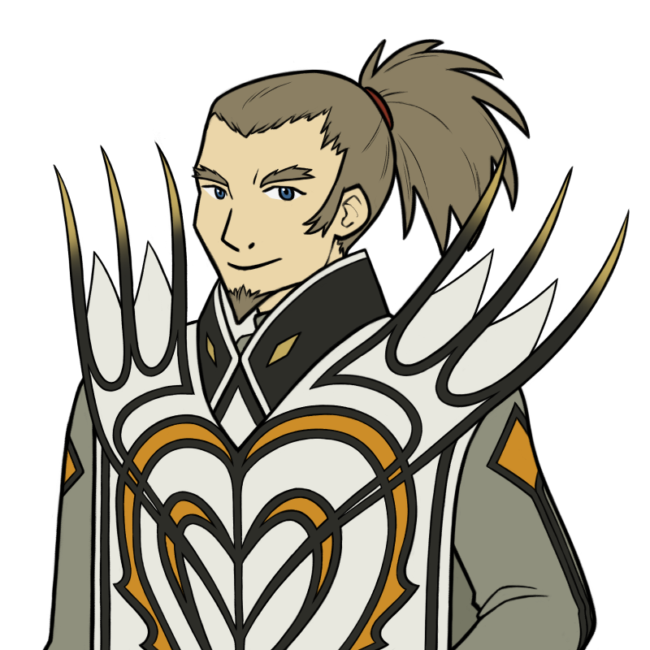
Van Grants
| Age | ?? |
| Class | ?? |
| Weapon | Sword |
Luke's sword teacher. Also the Commandant of the Oracle Knights, the military branch of the Order of Lorelei. He's supposed to be in charge of the God-Generals, but they've gone rogue, and this combined with Order politics means he has a lot to deal with. He's the one who rescued Luke when he was kidnapped, and one of the few people sympathetic to his life lived under house arrest, so Luke looks up to him a lot.
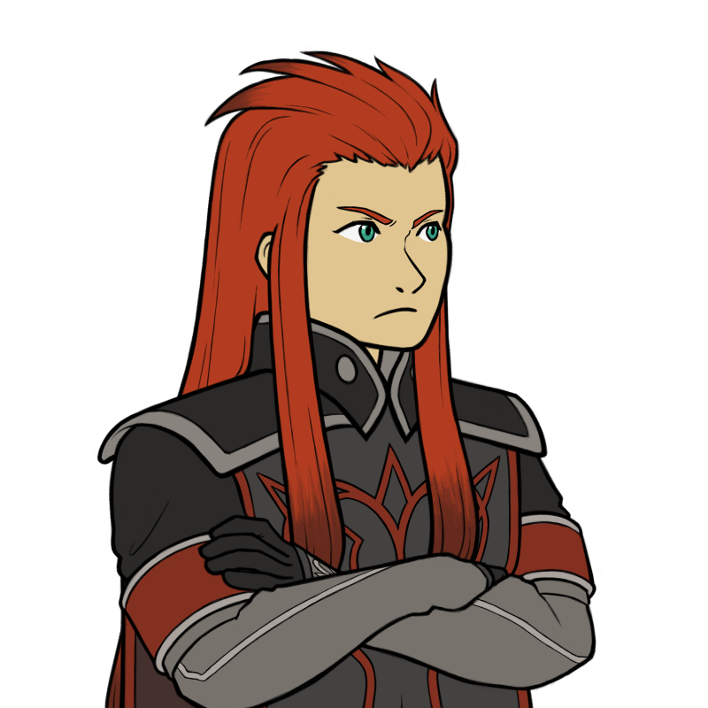
Asch
| Age | ?? |
| Class | ?? |
| Weapon | Sword |
Who is this guy and what is his deal? We just don't know. What we do know, though, is that he is PEEVED. He's got grudges with just about everyone, which he refuses to explain. He's also a God-General, but doesn't particularly get along with his coworkers either, and eventually ends up breaking with them to do his own thing.
Antagonists
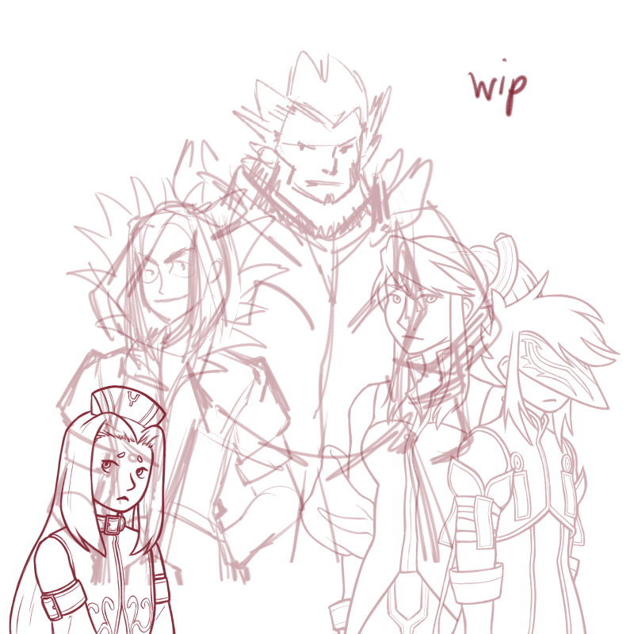
God-Generals
The God-Generals of the Order of Lorelei are the leaders of the military branch of the church, directly underneath Commandant Van Grants. However, they've recently gone rogue, attacking military outposts, orchestrating kidnappings, and generally causing mayhem. They're nominally allied with Grand Maestro Mohs, but their true goals, and the reasons for their extreme actions, are a mystery. There are six God-Generals in total, all mysterious, dangerous, and nursing powerful grudges: Largo, Arietta, Legretta, Sync, Dist, and Asch.
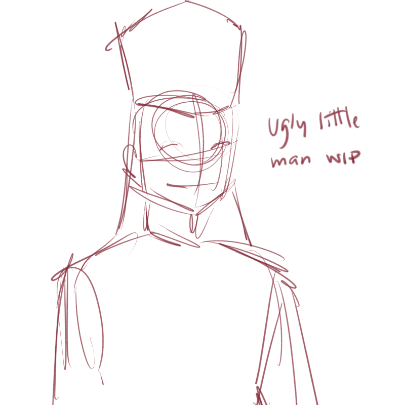
Grand Maestro Mohs
The Grand Maestro of the Order of Lorelei. While Fon Master Ion is the official leader of the church, Mohs arguably holds more power within the organization, and has significantly differing views. Unlike Ion, whose preferred method is peaceful negotiation, Mohs' priority is fulfillment of the Order's mandate through any means necessary, up to and including the use of force. He's also extremely set in his ways, refusing to consider alternate interpretations of Church doctrine, no matter the circumstances.